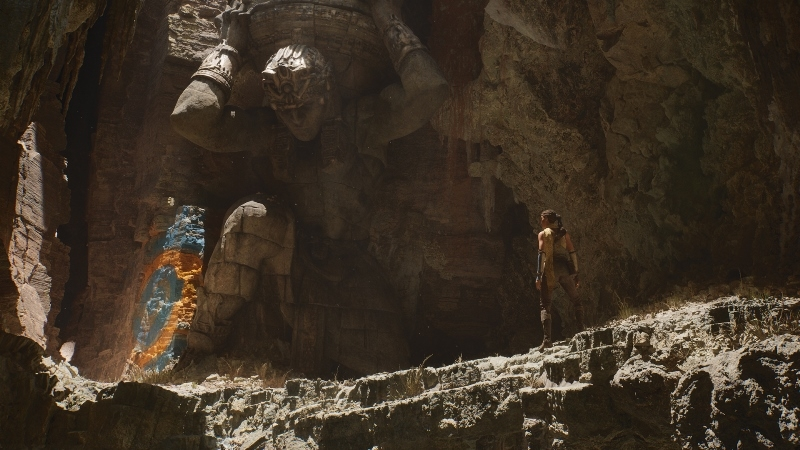
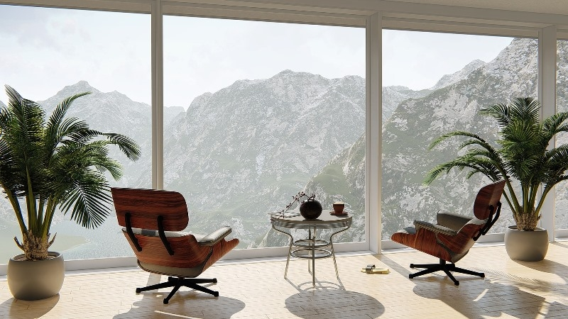

З кожним роком кількість ІТ-спеціальностей все збільшується. Важко знайти сферу життя, яку б не
зачепив процес інформатизації та комп’ютеризації. Також збільшується потужність комп’ютерної
техніки, що надає нові можливості для роботи дослідників, інженерів, архітекторів, графічних
дизайнерів, розробників та інших. Створюються ігри з неймовірною графікою, наприклад на основі
ігрового движка Unreal Enginе, а візуальні ефекти багатьох фільмів важко відрізнити від реальності.
Все це стало можливим завдяки використанню технологій 3D-моделювання.
Тривимірна графіка або 3D-моделювання – комп'ютерна графіка, що поєднує в собі прийоми
і інструменти,
необхідні для створення об'ємних об'єктів в тривимірному просторі.
Під прийомами варто розуміти способи формування тривимірного графічного об'єкту – розрахунок його
параметрів, креслення «скелету» або об'ємної, не деталізованої, форми; витискання, нарощування і
вирізання деталей і под.
А під інструментами – професійні програми для 3D-моделювання. В першу чергу – SolidWork,
ProEngineering, 3DMAX, а також деякі інші програми для об'ємної візуалізації предметів у
простору.Об'ємний рендеринг – це створення двовимірного растрового зображення на основі побудованої
3D-моделі. Це максимально реалістичне зображення об'ємного графічного об'єкту.
Створення 3D-ігор.
Ігрова індустрія зараз знаходиться на піку популярності. Minecraft, Need for Speed, FIFA та інші
3D-ігри захоплюють мільйони гравців в усьому світі. То ж, чому б не спробувати створити власну
тривимірну гру? Для цього слід використовувати спеціальні середовища розробки, наприклад Unity, а
також вивчати мови програмування.

Інтер’єр приміщень
Плануванням внутрішнього оздоблення приміщень займаються дизайнерські студії. Будь-який предмет можна
візуалізувати за допомогою сучасних програм. Найчастіше для цього використовують програму 3Ds Max.
Створення таких моделей потребує високої уважності до деталей та значну кількість часу. Один тільки
рендеринг, тобто експорт моделі у графічний формат може зайняти бiльше, нiж декілька годин. Тож для
цього заняття потрібно мати наполегливість та досить потужний комп’ютер.

Створення 3D-мультфільмів, анімації.
Такі студії, як Pixar, Disney, DreamWorks створюють неперевершені 3D-мультфільми. А кількість їх
переглядів у вітчизняному сегменті YouTube може сягати сотень мільйонів! Тож не дивно, що професія
3D-мультиплікатора та візуалізатора дуже затребувана. Створювати мультфільми можна у різних
програмах, наприклад у програмі 3D Maya.